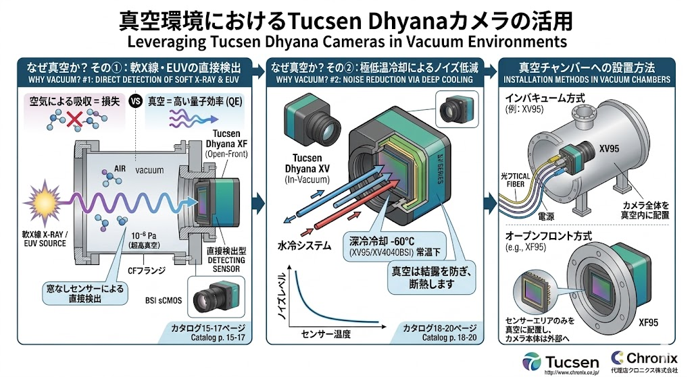
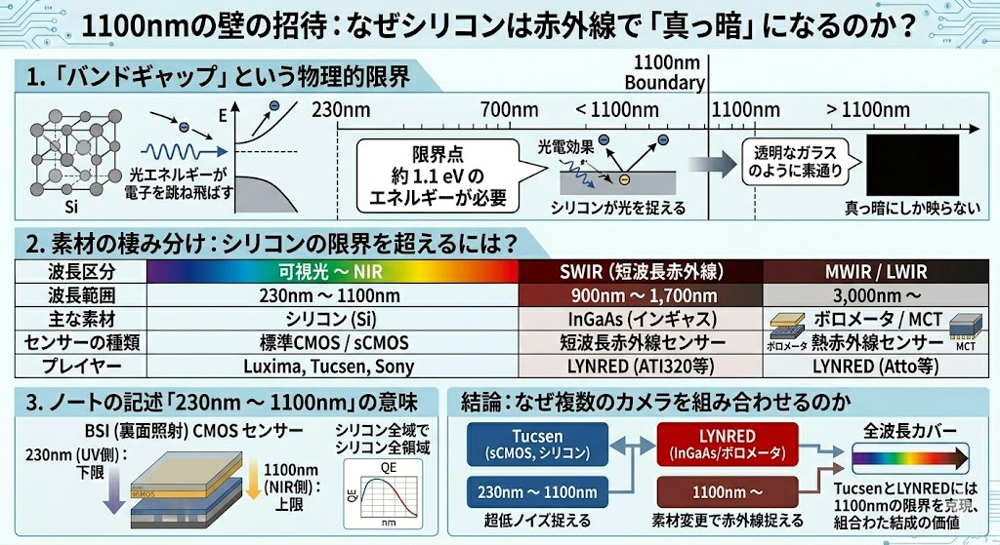

「なぜ真空か？」物理的優位性と、カスタム筐体を超越する標準設置スタイルの提案
高精度イメージング、特に軟X線やEUV（極端紫外線）の領域では、大気による光子吸収が最大の障壁となる。また、センサーの熱雑音を極限まで抑えるためには、結露の心配がない真空環境下での深冷冷却が物理的に不可欠である。

図1：軟X線・EUVの直接検出と、深冷冷却によるノイズ低減のメカニズム
軟X線は空気分子に吸収されるため、光源からセンサーまでを真空にする必要がある。窓なしセンサー（Direct Detection）により、量子効率（QE）を最大化する。
真空は理想的な断熱材となり、センサーを常温下でも -60℃ まで安定冷却可能。温度低下に伴いノイズレベルは指数関数的に減少する。
切削加工による自作筐体は、気密性の確保や排熱設計に多大なリスクを伴う。Tucsenは、用途に合わせて最適化された2つの標準設置スタイルを提供し、導入コストと設計工数を大幅に削減する。

図2：In-Vacuum（内部設置）とOpen-Front（フランジ接続）の構造比較
カメラ全体をチェンバー内に配置。水冷システムと光ファイバー転送により、10^-6 Pa の環境下でも大気中と同等の安定した運用を実現。大がかりな筐体設計が不要。
センサーエリアのみを真空に露出させ、本体は大気中に配置。CFフランジ等で直接接続し、10^-7 Pa の超高真空環境に対応。軟X線・EUVの直接観測に最適。
自社での切削筐体開発と比較し、Tucsenの真空専用モデルを採用することで、以下の技術的・経済的アドバンテージを確保できる。
| 評価項目 | Tucsen 標準品 (XV/XF) | カスタム切削筐体 (自作) |
|---|---|---|
| 真空実証 | 10^-6 ～ 10^-7 Pa 動作保証済み | 気密漏れ・ガス放出のリスク大 |
| センサー冷却 | 最大 -60℃（水冷・真空断熱内蔵） | 放熱経路の設計が極めて困難 |
| データインターフェース | 光ファイバー（USB 3.0-Over-Fiber）標準 | 真空フィードスルーの個別設計が必要 |
| 導入コスト・納期 | 低コスト・短納期 | 設計・加工・試験に数ヶ月を要する |